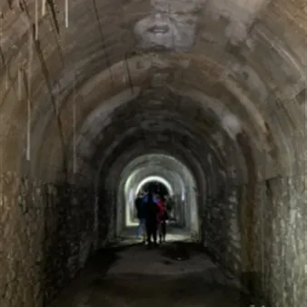

da gio 12 nov a lun 30 nov
Giornate di Speleologia Urbana: alla scoperta della Trieste sotterranea
l Club Alpinistico Triestino propone la dodicesima edizione della manifestazione con conferenze e visite guidate dedicate alle gallerie antiaeree e ai bunker della Seconda guerra mondiale. Giovedì 12 novembre 2026, alle 20:00, il programma proseguirà alla Kleine Berlin, in via…
 Indicazioni
Indicazioni
- Costi e prenotazioni
- Costo non indicato · Prenotazione non indicata
- Programma
- Programma da verificare. Apri la fonte ufficiale per orari e possibili aggiornamenti.
- In caso di maltempo
- Nessuna indicazione specifica pubblicata.
- Note
- Acquisito automaticamente dalla fonte.
L’EVENTO
Descrizione completa
l Club Alpinistico Triestino propone la dodicesima edizione della manifestazione con conferenze e visite guidate dedicate alle gallerie antiaeree e ai bunker della Seconda guerra mondiale. Giovedì 12 novembre 2026, alle 20:00, il programma proseguirà alla Kleine Berlin, in via Fabio Severo. Dopo l’introduzione di Maurizio Radacich, seguirà la visita guidata con Lucio Mircovich, Maurizio Bressan, Marino Codiglia e Dean Leonardelli. Mercoledì 18 novembre 2026, alle 20:00, sempre alla Kleine Berlin, Maurizio Radacich terrà la conferenza I ricoveri pubblici in galleria della provincia di Trieste , dedicata alle strutture realizzate per proteggere la popolazione durante i bombardamenti. Giovedì 19 novembre 2026, alle 20:00, si visiterà la galleria antiaerea di Scala al Monticello, con ritrovo davanti all’ingresso del Centro Commerciale Il Giulia. La visita sarà condotta da Maurizio Bressan, Marino Codiglia, Dean Leonardelli e Lucio Mircovich. Mercoledì 25 novembre 2026, alle 20:00, la Kleine Berlin ospiterà la conferenza I ricoveri della Ferriera di Servola , a cura di Silvio Masè e Marco Brogi, dedicata alle strutture di protezione legate allo storico polo industriale triestino.
Sabato 28 novembre 2026, alle 14.30, lo staff del CAT accompagnerà i partecipanti alla scoperta dei bunker di Opicina, con ritrovo nel piazzale dell’Obelisco. La manifestazione si concluderà lunedì 30 novembre 2026, alle 20:00, nella sede del Club Alpinistico Triestino, con la conferenza I bunker tedeschi nella provincia di Trieste , a cura di Maurizio Bressan. Al termine saranno consegnati gli attestati di partecipazione.
Le visite permetteranno di conoscere direttamente strutture sotterranee spesso poco accessibili, approfondendone la funzione e il ruolo nella storia del territorio.
La partecipazione alle visite è subordinata all’iscrizione, con un massimo di 25 persone. La quota è di 50 euro per gli adulti e di 25 euro per i bambini sotto i 10 anni. Per le escursioni è consigliato un abbigliamento adeguato alla visita in galleria; la durata delle escursioni è di circa due ore, salvo imprevisti.
Le iscrizioni si effettuano presso la sede del CAT, in via Raffaele Abro 5/A, il martedì dalle 21 alle 23 oppure direttamente prima delle presentazioni. Il modulo è disponibile sul sito www.cat.ts.it e, una volta compilato, può essere inviato a cat@cat.ts.it , indirizzo al quale rivolgersi anche per informazioni. La quota comprende l’iscrizione al CAT e il materiale divulgativo previsto dall’iniziativa.
IL PROGRAMMA
Programma e orari
Appuntamenti raccolti dalle fonti elencate. Dove manca un orario, non è ancora disponibile in questa scheda.
Programma pubblicato
- Dal 2026-11-12 al 2026-11-30
INFORMAZIONI UTILI
Prima di partire
- Controllare la fonte prima di partire.
ORGANIZZAZIONE